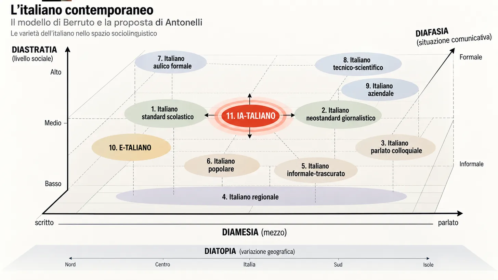

NewsLetter #40
Quando la macchina detta la norma
L’IA-taliano fra le varietà autorevoli dell’italiano, e il prestigio linguistico che cambia sorgente per la terza volta
IA-taliano: lingua da professionista - ChatGpt creation
In breve
🔁 Le parole preferite dai modelli generativi hanno cominciato a comparire nel parlato spontaneo delle persone dopo il rilascio di ChatGPT, secondo uno studio del Max Planck Institute for Human Development ancora allo stadio di preprint.
🗣 Giuseppe Antonelli, che aveva coniato e-taliano per l’italiano dei social, parla oggi di IA-taliano e lo colloca fra le varietà autorevoli della lingua.
🧪 Nei test condotti fra il 2023 e il 2025 sui quattro principali modelli le sviste grammaticali sono quasi scomparse, e l’attenzione si è spostata dalla correttezza alla creatività.
🏛 Il prestigio linguistico in Italia ha cambiato sorgente più volte, dalla letteratura alla scuola alla televisione, e ogni volta ha seguito chi era disponibile come modello.
✍️ Per chi scrive dentro un’amministrazione la scelta riguarda quanto spazio lasciare a quella varietà, e quali parti del testo restano di mano umana.
Le parole dei modelli tornano nel parlato
Alcune parole predilette dai sistemi generativi hanno cominciato a comparire più spesso nel parlato delle persone dopo il rilascio di ChatGPT. Lo ha misurato un gruppo del Max Planck Institute for Human Development guidato da Hiromu Yakura, che ha analizzato oltre ottocentomila episodi di podcast in inglese e ha seguito nel tempo termini come delve, meticulous, intricacies, trovandoli in crescita nelle conversazioni non copionate, con l’aumento più marcato nei podcast di scienza e tecnologia. Il lavoro circola come preprint e non ha ancora superato la revisione fra pari, quindi va letto come indizio robusto e non come prova conclusa. La formula con cui gli autori riassumono il fenomeno resta la più efficace: le macchine addestrate su dati umani restituiscono adesso i propri tratti al linguaggio umano. Il movimento si chiude in cerchio, perché i testi brevi e poco variati che riempiono la rete sono il materiale su cui quei sistemi hanno imparato a scrivere, e da quel materiale è uscita una lingua che ora torna verso di noi.
Che cosa significa varietà di riferimento
Giuseppe Antonelli chiama IA-taliano la lingua prodotta dai modelli generativi e la colloca dentro lo schema delle varietà dell’italiano contemporaneo. Nel saggio uscito nel 2025 su «Lingue e Culture dei Media» scrive che «il ricorso a questi strumenti per la produzione di testi relativi a compiti scolastici o professionali sta consacrando di fatto l’IA-taliano come un’autorevole varietà di riferimento». La collocazione è precisa: aggiornando lo schema di Gaetano Berruto sulle varietà dell’italiano, Antonelli tiene in basso l’e-taliano, quello digitato dei social e quello registrato degli assistenti vocali, e assegna all’IA-taliano una posizione sociolinguistica più alta, sopra il neostandard e sotto il vecchio italiano normativo della scuola. Il passaggio decisivo arriva subito dopo, dove osserva che ci si affida agli LLM dando per scontato che il loro italiano sia corretto rispetto alla norma, e riconoscendolo per ciò stesso come varietà normativa. Una varietà di riferimento è quella che i parlanti imitano quando scrivono sotto giudizio, a scuola e al lavoro, e diventa tale per consenso pratico.

Adattamento per l’IA-taliano nello schema di Berruti - Creazione ChatGPT
Dalla correttezza alla creatività
Fra il novembre 2023 e il giugno 2025 Antonelli ha sottoposto ChatGPT, Copilot, Gemini e Claude a una serie di test ripetuti sui testi in italiano. Il risultato che pesa in questo ragionamento riguarda la scomparsa quasi completa delle sviste grammaticali e delle interferenze con l’inglese, accompagnata da una capacità crescente di muoversi fra registri, varietà regionali e situazioni comunicative diverse. La soglia di attenzione si sposta di conseguenza dalla correttezza alla creatività, e nell’ultimo test Antonelli chiede ai quattro sistemi un racconto nello stile delle Città invisibili, riprendendo la domanda che Italo Calvino si poneva già nel 1967: «Avremo macchine capaci di ideare e comporre poesie e romanzi?». Una varietà linguistica acquista autorità nel momento in cui smette di sbagliare, e questo passaggio si è compiuto in meno di due anni.
Il prestigio linguistico cambia sorgente
L’italiano ha cambiato modello di riferimento almeno due volte prima d’ora, e ogni volta ha seguito chi era disponibile come esempio quotidiano. Per secoli il modello fu la letteratura, con il toscano illustre che si imparava sui libri e si imitava scrivendo. Poi arrivarono la scuola dell’obbligo, le migrazioni interne e la radiotelevisione, e Tullio De Mauro lo raccontò nella Storia linguistica dell’Italia unita, uscita da Laterza nel 1963, quando l’italiano parlato stava appena diventando la lingua comune di un paese che fino a poco prima parlava soprattutto dialetto. In entrambi i casi il prestigio si è appoggiato a una fonte percepita come competente e presente nella vita di tutti i giorni. L’IA-taliano possiede le due caratteristiche in misura mai vista, perché risponde in qualunque momento e suona sempre a posto. Stefano Ondelli, su Treccani, lo dice apertamente quando scrive che «l’italiano dell’IA è destinato a diventare un modello di riferimento e di prestigio linguistico per la comunità dei parlanti». La spinta arriva da milioni di gesti quotidiani di imitazione.
Una scrittura sempre più prevedibile
Nell’arco di un decennio la scrittura umana è diventata meno varia e più prevedibile per le macchine. Lo studio è di Elaine Chang, uscito su «Scientometrics» nel marzo 2026, e confronta dieci anni di testi presi da PubMed, da Wikipedia e da Stack Exchange, misurando quanto un modello linguistico riesca ad anticipare la parola successiva. La convergenza comincia prima della diffusione dell’IA generativa, il che toglie ai modelli il ruolo di causa unica, e mostra una accelerazione recente compatibile con un rinforzo reciproco fra scrittura umana e scrittura automatica. Che i modelli siano ormai dentro i testi scientifici lo ha documentato il gruppo di Dmitry Kobak su «Science Advances»: nel 2024 più di un abstract biomedico su otto porta tracce di elaborazione con un LLM, e in alcuni settori la quota sale molto. Il quadro descrive una tendenza già in corso a cui i sistemi generativi hanno dato velocità e direzione.
L’omologazione come questione pubblica
Zhivar Sourati, Alireza Salkhordeh Ziabari e Morteza Dehghani descrivono i modelli linguistici come amplificatori degli stili comunicativi dominanti. La loro rassegna, uscita su «Trends in Cognitive Sciences» nel 2026, argomenta che i sistemi addestrati sulla maggioranza riproducono il modo di scrivere e di ragionare della maggioranza, e lasciano ai margini le formulazioni minoritarie, comprese quelle che appartengono a comunità linguistiche, professionali o generazionali specifiche. La varietà espressiva sostiene la varietà cognitiva, e la seconda è la materia prima dell’intelligenza collettiva. Per una amministrazione pubblica questo ha conseguenze dirette. Il pubblico a cui un ente si rivolge comprende persone con percorsi scolastici molto diversi, cittadini di origine straniera, anziani che hanno con la scrittura un rapporto formale e giovani che ce l’hanno rapidissimo. Una lingua che si restringe verso un unico registro medio raggiunge meno persone di quante ne raggiungeva prima, e la perdita si distribuisce in modo diseguale.
Il margine di manovra di chi scrive per un’istituzione
Chi lavora nella comunicazione pubblica può decidere quanto spazio dare all’IA-taliano, e la decisione va presa prima di aprire il software. Conviene stabilire in anticipo dove il modello lavora bene, e la riscrittura di un testo lungo verso una versione leggibile è il caso più evidente, e dove la mano resta umana, cioè nelle definizioni, nelle condizioni, nelle formule che attribuiscono responsabilità e in tutto ciò che identifica la voce dell’ente. Serve poi una rilettura vera, quel secondo passaggio che nelle redazioni decide se un testo può uscire, perché è lì che si riconoscono le parole arrivate dal modello e si sceglie se tenerle. Un ufficio che adotta senza filtri le formulazioni della macchina le consegna prestigio, e il prestigio linguistico si costruisce così, per imitazione ripetuta. Una varietà di riferimento si afferma quando abbastanza persone la trattano come la forma giusta, e quella decisione si rinnova ogni giorno, un testo alla volta.
Fonti di questa puntata
Antonelli G. (2025), Storia brevissima (ma molto intensa) dell’IA-taliano, in «Lingue e Culture dei Media», 9 (1), pp. 4-50, DOI 10.54103/2532-1803/29341, pubblicato online il 31 luglio 2025; le citazioni provengono da p. 14.
Chang E. (2026), Human writing and machine patterns: analyzing a decade of convergence, in «Scientometrics», 131 (3), pp. 1635-1654, DOI 10.1007/s11192-026-05589-y.
De Mauro T. (1963), Storia linguistica dell’Italia unita, Laterza, Roma-Bari.
Kobak D., González-Márquez R., Horvát E.-Á., Lause J. (2025), Delving into LLM-assisted writing in biomedical publications through excess vocabulary, in «Science Advances», 11 (27), eadt3813, DOI 10.1126/sciadv.adt3813.
Ondelli S. (2026), L’Intelligenza Artificiale sconfiggerà il burocratese?, in «Treccani Magazine», speciale L’IA-taliano, ovvero la lingua italiana sotto la luce artificiale dell’intelligenza, 25 febbraio 2026.
Sourati Z., Salkhordeh Ziabari A., Dehghani M. (2026), The homogenizing effect of large language models on human expression and thought, in «Trends in Cognitive Sciences», DOI 10.1016/j.tics.2026.01.003.
Yakura H. et al., Empirical evidence of Large Language Model’s influence on human spoken communication, Max Planck Institute for Human Development, arXiv:2409.01754; preprint, non sottoposto a revisione fra pari alla data di questa puntata.
:: AI Officer :: Newsletter #40 Interferenze semantiche sull’AI nella Comunicazione Pubblica - www.aiofficer.blog
Substack: https://aiofficer.substack.com Newsletter LinkedIn: https://www.linkedin.com/newsletters/ai-officer-newsletter-7402362836275875841/